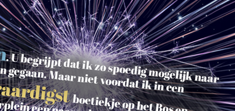
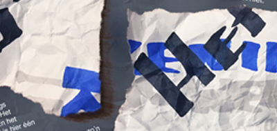
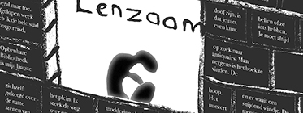
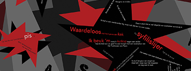
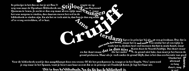

Reisverhalen
Inloggen
De leukste verhalen voor tijdens je reis
Vind hier je verhaal
Filteren
Gekozen filters:
Filteren
Genre
Avontuur
(5)
Detective
(5)
Historisch
(7)
Humor
(17)
Psychologisch
(12)
+ Meer opties
School
(10)
Sociaal
(26)
Sport
(4)
Sprookjes
(7)
Roman
(6)
Leestijd
3 min
0 min
5 min
Tekstvormen
Meest gelezen verhalen

Presentator die ten onrechte denkt aansluiting te hebben gevonden bij 'De Kids'

Alzheimer
Resultaten 24
Sorteren op
Meest gelezen
Nieuw
Best beoordeeld
Interview
Lepra

Doof

Eric Lucassen

Johan Cruijf
Presentator die ten onrechte denkt aansluiting te hebben gevonden bij 'De Kids'